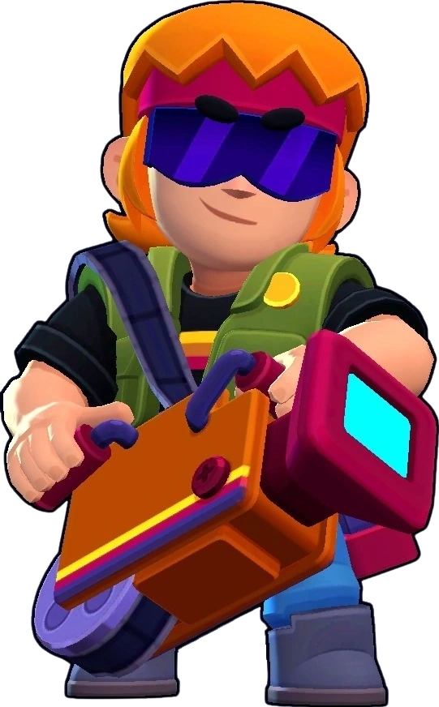

¿Quién es Buster?
Buster se llevó un proyector del cien en el que trabaja para poder usarlo por ahi como arma y atrezo. No es nada profesional, pero el piensa que le queda genial.
Buster es un brawler de rareza Mítico (anteriormente de rareza Cromática) que pudo ser desbloqueable al conseguir el nivel 30 del Brawl Pass número 15: Estación fantasmal. Ahora puede ser obtenido por el Camino Starr. Buster tiene una salud considerable, un daño pequeño, aunque cuando el oponente está en un rango cercano a Buster, su daño incrementa considerablemente; una velocidad rápida y una súper que bloquea los ataques de los oponentes. Este ataque especial se puede cargar de forma convencional (atacando a los enemigos) o estando cerca de tus aliados en modos 3c3.
|  |
NIVEL DE FUERZA 11 |
Sus gadgets
CINTURÓN DE HERRAMIENTAS: Tanto Buster como los aliados que se encuentren cerca de él recuperarán 934 puntos de salud por cada aliado que se encuentre en el área de carga de su súper |
TRÁILER: La próxima vez que Buster utilice Destello de lente atraerá a los enemigos hacia él. |
Sus habilidades estelares
 |
VERSIÓN DE DIRECTOR: Destello de lente inflige un 15% mas de daño por cada aliado que se encuentre en el área de carga de su súper |
 |
CHALECO PROTECTOR: Mientras Montaje esta activo, Buster recibe un 10% menos de daño y no puede ser empujado, ralentizado o aturdido. |
 Braian Arancibia
Braian Arancibia Aya El Baarar
Aya El Baarar